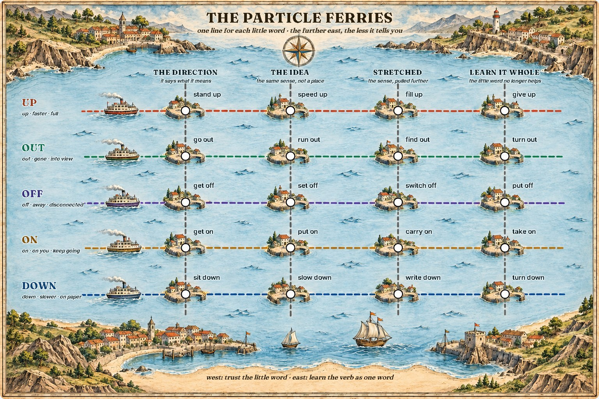
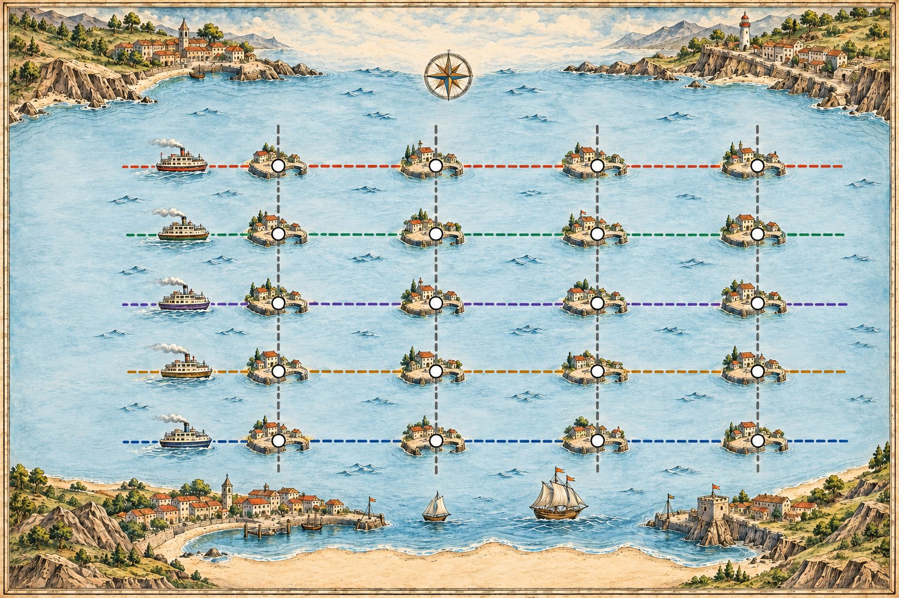

The Particle Ferries
A phrasal verb is a verb and a little word: stand + up, switch + off. Each little word is a ferry line here, and every line sails the same way. In the west the little word means exactly what it says; further east it keeps the idea but not the place; at the end of the line it no longer helps, and you learn the verb as one word. Find the line, then see how far east you are.
Read the chart
How far can you trust the little word?
The little word, the particle, is the clue. Near the start of its line it tells you everything; by the end of the line it tells you nothing. Every line has the same four zones.
Zone 1, the direction: it says what it means
UP is up, OUT is out, DOWN is down. You can guess these the first time you hear them.
Zone 2, the idea: the same sense, not a place
UP becomes more or faster, OUT becomes until none is left, DOWN becomes less. Still guessable.
Zone 3, stretched: the sense pulled further
OFF is disconnected, DOWN is on paper, UP is to the top. Guessable once you know the line.
Zone 4, learn it whole
The little word no longer helps: put off is postpone, give up is stop trying. Learn these as single words.
Some can split around their object
With a noun, either order works: put on a jacket, put a jacket on.
A pronoun always splits them
With it, them, her, the pronoun goes in the middle: put it on, never put on it.
The twenty stops
Read across a line: the meaning drifts further from the little word with every stop. Read down a column: every line drifts the same way.
| 1 · the direction | 2 · the idea | 3 · stretched | 4 · learn it whole | |
|---|---|---|---|---|
| UP | stand up rise to your feet | speed up go faster | fill up fill to the top | give up stop trying |
| OUT | go out leave, go outside | run out have none left | find out discover | turn out end up, prove to be |
| OFF | get off leave a boat or bus | set off start a journey | switch off stop a machine | put off postpone |
| ON | get on board | put on dress in | carry on continue | take on accept work or staff |
| DOWN | sit down take a seat | slow down go slower | write down put on paper | turn down refuse |
Where does the object go?
This is the part of phrasal verbs that grammar tests love. Two kinds of ferry: one that lets the object board in the middle, one that does not.
Separable: the object can board in the middle
With a noun, both orders. With a pronoun, the middle only.
| Verb | With a noun | With a pronoun |
|---|---|---|
| turn off | Turn off the engine. / Turn the engine off. | Turn it off. |
| put on | Put on your jacket. / Put your jacket on. | Put it on. |
| take down | Take down the number. / Take the number down. | Take it down. |
| turn down | She turned down the job. / She turned the job down. | She turned it down. |
Turn the radio down, please: turn it down.
Inseparable: the object stays on the quay
The object always comes after the whole verb, noun or pronoun.
| Verb | With a noun | With a pronoun |
|---|---|---|
| get on | Get on the ferry. | Get on it. |
| get off | Get off the bus. | Get off it. |
| get over | She got over the cold. | She got over it. |
| look after | Look after the boat. | Look after it. |
She's had a cold, but she's getting over it.
Read the chart
Click a stop and its line lights up below; click a coloured line's name for its senses. Switch the chart to see what each stop means, then a sentence. Read each line west to east: the meaning moves further from the little word at every stop.

Drag the chart sideways to reach the last zone.
The direction and the idea
Stretched, or learn it whole
The five lines
Wrong platform
Most mistakes put the pronoun on the wrong side, or take the wrong line.
| Not this | This | Why |
|---|---|---|
| Put on it. | Put it on. | a pronoun splits the verb |
| Turn off them. | Turn them off. | a pronoun splits the verb |
| Get the ferry on. | Get on the ferry. | get on never splits |
| The meeting was put down until Monday. | The meeting was put off until Monday. | put off is postpone |
| Speed down near the harbour. | Slow down near the harbour. | DOWN is less, but the verb is slow |
| We ran off fuel. | We ran out of fuel. | OUT is until none is left |
A good dictionary shows which kind a verb is: turn sth off splits; get on sth does not.
Signal words
The object can sit in the middle
- turn on / off / up / down
- put on / off / down / up
- take off (clothes), take down
- pick up, throw away, fill in
- pronoun in the middle: turn it off
The object stays after
- get on / off (a bus, a boat)
- get over (an illness)
- look after, look for
- come across, run into
- pronoun after: get on it, look after her
One test: can a machine or a piece of clothing go in the middle? Turn the engine off: yes. Then it splits.